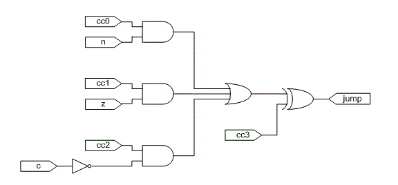
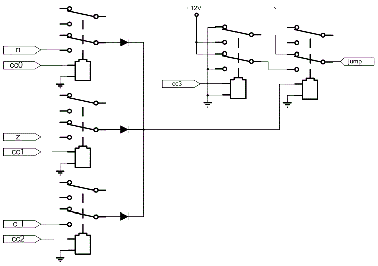

The condition logic supports two types of tests: comparisons with zero and comparisons between two unsigned numbers.
A trick is used to detect if a value is equal to zero. Instead of having dedicated zero-detect logic (which would normally be implemented as a wide-input NOR gate), the carry chain of the ALU is used. If the value under test is negated, then the carry output from the ALU will be high if and only if the input value is exactly zero.
In this mode, the A field will indicate a memory location to test and the B field will specify a jump address to take if the condition is true. The ALU should be set up to negate the A operand in order to test for zero. If the A operand is zero, the carry out from the ALU will be 1.
Instruction set up for comparison with zero:
First, a subtraction instruction is issued with the two arguments to compare. In other words, compute X - Y. The result should be saved back to X in order for the second instruction to test it for zero.
Instruction set up for subtraction part:
Second, issue the conditional instruction with the subtraction result as the A operand to the ALU.
Instruction setup for conditional jump part:
Here is a summary of the condition codes. Key:
The logical design of the condition decoder is as follows. cc0 - cc3 are the 4 bits from the cc field of the instruction.
It is implemented with 5 relays as follows. The carry flag provides both inverting and non-inverting outputs, so c_l comes directly from it.
